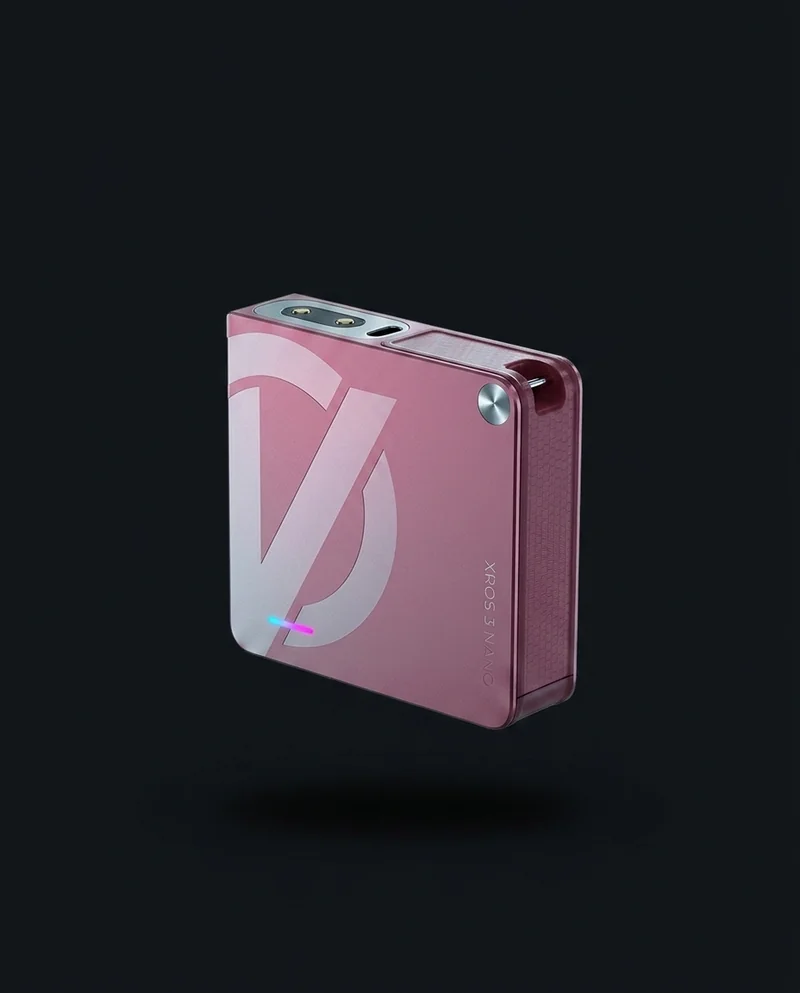
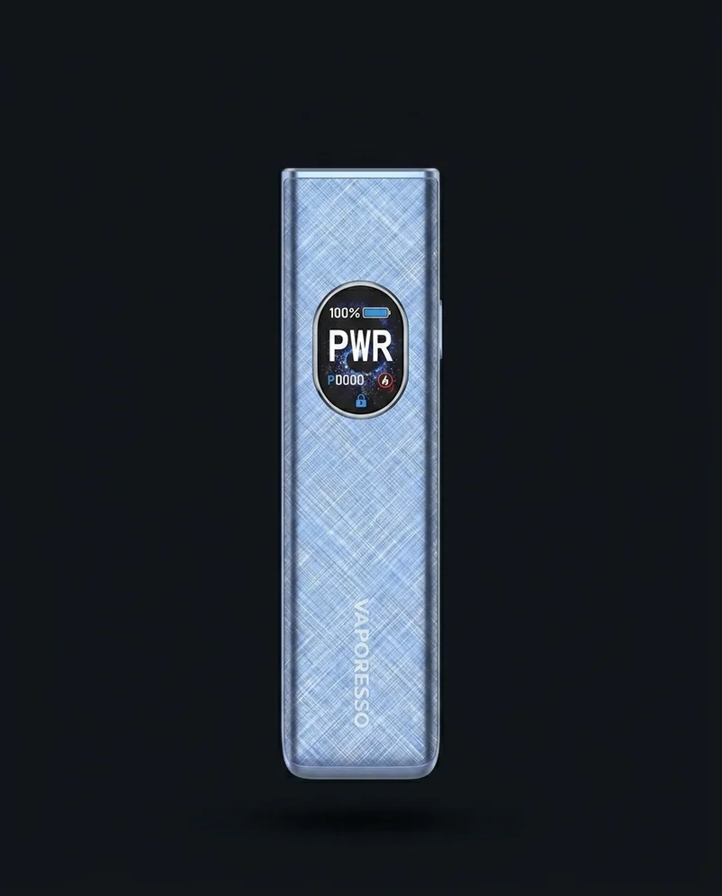
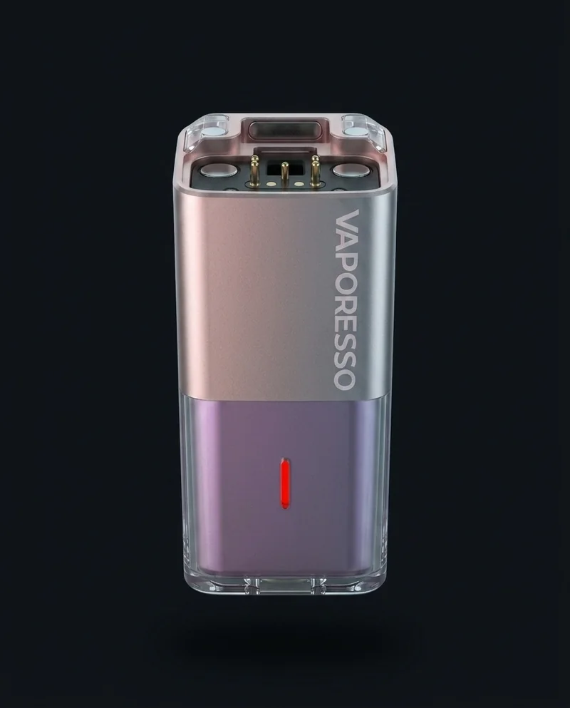

Vaporesso
Korpus XROS 3 Nano
Do najmniejszego wariantu linii XROS 3 — kompaktowa, kieszonkowa obudowa.
Część zamiennaKatalog · Części i akcesoria
Korpusy zamienne do linii Vaporesso XROS, grzałki do wszystkich marek, które polecamy, oraz kartridże i kable do ładowania. Jeśli nie wiesz, co pasuje do Twojego urządzenia — przynieś je albo zadzwoń.
Korpusy zamienne
3 warianty
Do linii Vaporesso XROS: Nano, 5, Cube.
Grzałki
6 marek
OXVA, Vaporesso, SMOK, Lost Vape, Voopoo, Aspire.
Wymiana grzałki
1–3 tygodnie
Zależnie od intensywności używania.
Kartridż
2–6 miesięcy
Wymienia się rzadziej niż grzałkę.
Obudowa poda z czasem się przeciera albo po prostu chcesz zmienić kolor. Korpus kupujesz osobno i przekładasz do niego swój pod i grzałkę — bez wymiany całego zestawu.

Do najmniejszego wariantu linii XROS 3 — kompaktowa, kieszonkowa obudowa.
Część zamienna
Do standardowego wariantu XROS 5 — pasuje do poda i grzałki z tego samego modelu.
Część zamienna
Do wariantu Cube — charakterystyczna kwadratowa obudowa tej linii.
Część zamiennaSzukasz korpusu do innego modelu niż XROS? Zadzwoń — 22 839 86 33, sprawdzimy dostępność.
Grzałka to część, którą wymienia się najczęściej — średnio co 1–3 tygodnie. Mamy grzałki do wszystkich marek, które polecamy w zestawach startowych.
Do XLIM GO 2, XLIM Pro 3 i Nexlim Go.
Do całej linii XROS: 5, 5 Mini, 5 Nano, 6 Mini, Pro 2.
Do Ursa Nano oraz do pod moda Thelema Aura S.
Do Novo 2C oraz do urządzeń kupionych gdzie indziej — sprawdzimy dopasowanie na miejscu.
Sygnały, że pora wymienić grzałkę: przypalony smak, mniejsza chmura, słabsze odczucie nikotyny, spalony zapach.
Kartridż (zbiornik na liquid) wytrzymuje zwykle 2–6 miesięcy — dłużej niż grzałka, ale też się zużywa: pęka, żółknie albo zaczyna przeciekać. Do tego w sklepie mamy kable USB-C do ładowania, drip tipy oraz drobne akcesoria do codziennego użytku.
Każdy z tych elementów kupisz osobno, bez konieczności wymiany całego zestawu — zobacz też zestawy startowe, jeśli szukasz nowego urządzenia od podstaw.
Korpus to obudowa poda bez elektroniki — z czasem się przeciera lub po prostu chcesz zmienić kolor. Kupując sam korpus, przekładasz do niego swój pod i grzałkę, zamiast wymieniać cały zestaw.
Obecnie do linii Vaporesso XROS: warianty pod XROS 3 Nano, XROS 5 oraz XROS Cube. Jeśli szukasz korpusu do innego modelu, zadzwoń — sprawdzimy dostępność.
Mamy grzałki do wszystkich marek, które polecamy: OXVA XLIM, Vaporesso XROS, SMOK Nord, Lost Vape Ursa, Voopoo PnP oraz Aspire BVC i AVP. Jeśli kupiłeś e-papierosa gdzie indziej, zadzwoń (22 839 86 33) — sprawdzimy, czy mamy pasującą grzałkę.
Średnio co 1–3 tygodnie, zależnie od intensywności używania i jakości liquidu. Sygnały wymiany: przypalony smak, mniejsza chmura, słabsze odczucie nikotyny, spalony zapach.
Zwykle 2–6 miesięcy, w zależności od modelu i częstotliwości użycia. Grzałkę wymienia się częściej niż sam kartridż.
Tak. Korpusy, grzałki, kartridże, kable USB-C i drip tipy sprzedajemy osobno — nie trzeba kupować nowego zestawu, żeby wymienić zużyty element.
Tak. Wszystkie części z tej strony są dostępne od ręki w sklepie stacjonarnym Asumpt przy Pl. Wilsona 4 w Warszawie, tuż przy wyjściu ze stacji metra Plac Wilsona. Oferta dotyczy wyłącznie sklepu stacjonarnego.
Nie wiesz, co pasuje
Przynieś urządzenie albo zadzwoń — dobierzemy właściwą grzałkę, kartridż lub korpus na miejscu.